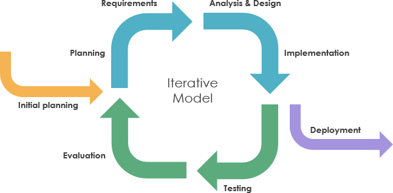

Iteratiivne arendusmudel on SDLC meetod, mille eesmärk on lahendada probleem mille tekitab
tavaline jäikmudel. jäikmudeli (nagu waterfall) rakendamisel ei saa muudatusi teha arenduse teostamise ajal.
Iteratiivsed arendusmudelid aga lubavad seda teha iga iteratsiooni vahel.
Iteratiivne arendusmudel on ise ka kombinatioon iteratiivsest endast ja
Inkrementaalmudelist, seda seetõttu, et ühe iteratsiooni ajal saab kas olemasolevat struktuuri
muuta (uus iteratsioon vanast) või lisada sellele midagi juurede(uus inkrement vanale).
Iteratiivne arendu mudel sobib näiteks, juhul kui klient või lõppkasutaja vajab mõne funktsiooni
teist sugust toimimist, või midagi juurde.
Näide on olemas MMORPG kus mängja saab tappa koletrisi, kuid mängijad soovivad ka teisi
mängjaid tappa. Arendusmeeskond võtab kuulda, ning arendab juurde meetodid ja funktsioonid
koos muude multimeediavaradega selle mängjale võimalikuks muutmiseks.
Tulemuseks on see, et avatakse 1v1 arena.
- Arendusmudel sobib ka sellistel juhtudel kus tingimused arebduseks on üheselt määratud
ning kõigile meeskonna liikmetele selged ja ühiselt arusaadavad.
- Iteratiivne arendusmudel sobib ka olukordades kus on ka turu või konkurentsisurve mingis
tootekategoorias. võib olla kas siis uus arendus lastakse väljsa osalise funktsioonaalsusega
või arendatakse vanale olemasolevale projetile uss osa juurde, samuti osalise funktsioonaalsusega
- Saab kasutada arendusmudelit ka siis kui projekt rakendab uudset meetoodikat või tehnoloogiat
mingisuguse lahenduse arendamiseks, ning mille käigus arendajad paralleelselt ka õpivad
uut tööristu tundma
- Või siis kui projekti eesmärka ajas muutub, algab ühe eesmärgina, kuid
kasutaja testimine näitab hoopis mõne kõrvalise funktsionaalsuse kasualikumat olekut või kasutatakse
toodet eeldatust täielikult teistmoodi. Sellisel juhul saab arendusmeeskond suunata projekti ümber
kasutajate poolt ettenäidatud käitlemise suunas (arendus sihitakse sellele kuidas kasutaja kasutab
mitte kuidas arendajad seda ette nägid)

| Tugevus | Puudujäägid |
| Paindlikkus, mis tagab kiired tlemused. Iteratiivses arenduses saab jaotada kliendi poolt toodud probleemi või nõude, mitmeks väiksemaks osaks, ning need omakorda üksikuteks funktsioonideks. See aitab valmis saada mingisuguse versiooni tootest üsna kiiresti. Olenevalt projektsis isegi tundidega või mõne päevaga. Selline tükeldamine lubab arendusmeeskonnal endale parajd probleemid ette seada. |
Projekti edasises arendusjärgus või isegi etapis võivad muudatused olenevalt selle suurusest ja kontekstist muuuda kulukaks. Näiteks leitakse üles struktuuris funkjtsioonaalne viga, ning see algne arendustöö on nüüd mitme erinvea teenuse või funktsioonikihi all. muudatus siin tähendab muudatusi ka kõikides teistes süsteemides mis sellele tuginevad. |
|
Lihtne omaks võtt ja kliendi rahulolu, tänu pidevatele muudatusele, on iteratiivne arendus aredajale mugav, lubades võtta poole pealt juurde uusi nõudeid või soove kliendilt, tagades kliendile sobivama toote. Iteratiivses mudelis leitakse ka vead suhteliselt kiiresti üles, ning nende parandamine tõhustab toote rakendamist ja omaks võttu ka kasutajaile. Vigade parandus ise toimib ka jooksvalt. |
Kõrgem surve, et saada projektile kasutajaid, kes peavad siis tootekohta tagasissidét andma. Kosemudelis saab kasutaja toote kätte alles arendse lõpus, pärast mida muudatusi siise wiia ei ole võimalik. kuna iteratsiivses mudelis ei ole 100% nõudeid arendus töö alguses määratud, saadakse täiendavaid nõudeid lõppkasutajatelt arenduse ajal. |
| Lihtne versiooni haldus. Iteratiivses arenduses on pm iga uus väljalase uus versioon mis aitab ära hoida katkise süsteemi leviku. Näiteks: lastakse välja FPS mängus, patch, mis rikub ära kasutjahüppamis füüsika(on laggy), arendus meeskond saab reageerida, keerates live välja lase vvanale versioonile, parandadaa vead ning ss laseb juba parandatud patchi uuesti välja |
Eripärade ja omaduste kasutajani jõudmine. Tihtipeale peavad kaustajad uusi funktsioone arendus meeskonnalt ise küsima, või ootama kuni arendusjärk selle funktsioonini mis neil vaja on, jõuab. Uute versioonide puhul peavad kasutaajad läbima ka uute kasutajaliideste eripäradega, või koguni täiesti erinevate liidestega. Uuega harjimine võtab aega ja tahtmist |
|
Sobib organiustaioonidele, mis arendavad erinevaid agiilseid arends- metoodika praktikaid. Ta toimib vga hästi väiksemates agiilsetes rühmades, kus vastutus on jaotatav meeskonna liikemete vahel, ning mis võimaldab iteratsiooni läbida suhteliselt kergelt ja kiirelt, mugav arendajatele |
-- |